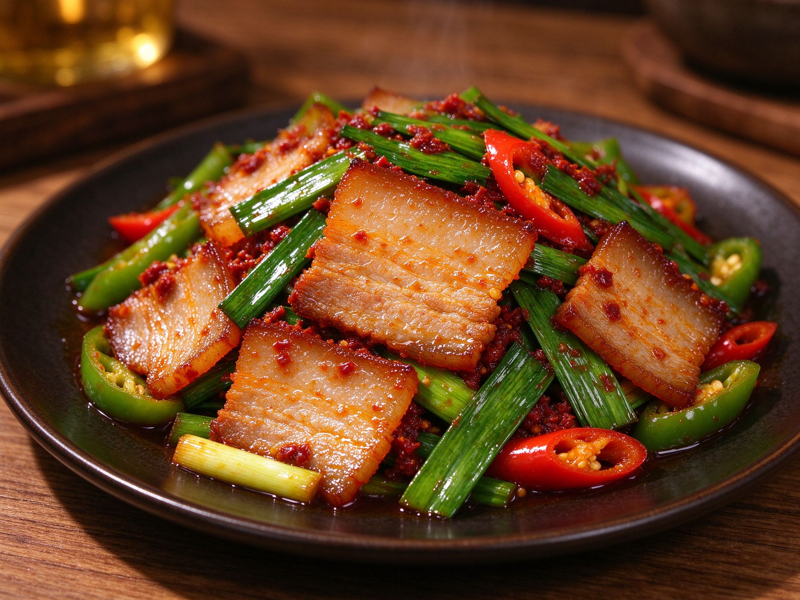

Twice-Cooked Pork (Hui Guo Rou): The Sichuan Classic That's Worth Boiling For
If there's one dish every Sichuan cook learns at home, it's hui guo rou — literally "returned-to-the-wok meat." Fatty pork belly is boiled until just set, sliced thin, then sent back to a screaming-hot wok with leeks, peppers, and a glossy slick of doubanjiang. The result: tender, slightly chewy pork with crisped, curling edges and a rich, savory-spicy glaze. It's homey, it's addictive, and it's easier than the legend suggests.
Why "Twice-Cooked"?
That double pass is the whole trick. The first cook — a gentle simmer — renders some fat and sets the meat so it slices cleanly into thin, even pieces. The second cook — a hot wok sear — drives out more fat, crispens the edges, and lets the seasonings coat every slice. It's the same logic behind la zi ji's double-fry: cooking twice gives a texture you can't get in one pass.
The Ingredients
- Pork belly — 450 g / 1 lb, with skin. The fat is essential; don't swap for lean pork.
- Leeks or scallions — the classic partner, cut into 5 cm sections. Green parts add color and bite.
- Doubanjiang — 1.5 tablespoons, the fermented chili bean paste that gives the dish its red glow.
- Garlic, ginger, black beans (douchi) — a little for depth.
- Shaoxing wine, soy sauce, a pinch of sugar — to balance the heat.
- Bell pepper — optional, for sweetness and crunch.
The Method
1. Boil the belly gently
Put the pork belly in cold water with a few slices of ginger and a splash of wine. Bring to a simmer and cook 20-25 minutes, until a chopstick pierces the skin easily but the meat is still firm. Rinse, cool, and slice thinly — about 2-3 mm. Slicing thin and even is what makes the edges curl and crisp.
2. Render the fat in a dry wok
Heat a wok or skillet over medium-high with just a teaspoon of oil. Add the slices in a single layer and let them cook undisturbed until they release and the edges start to curl and brown — about 2 minutes per side. Pour off most of the rendered fat, leaving a couple of tablespoons. This step is what makes the texture sing.
3. Bloom the doubanjiang
Lower the heat, push the pork to one side, and fry the doubanjiang in the oil with the garlic and black beans for 30-45 seconds until it turns glossy and fragrant and the oil reddens. This "blooming" unlocks the paste — see our doubanjiang guide for how to do it right.
4. Toss with the aromatics
Stir everything together with a splash of Shaoxing wine and soy sauce. Add the leek whites and peppers first, toss 30 seconds, then the leek greens just until wilted. A pinch of sugar balances the heat. Serve immediately, steaming hot, over rice.
Three Things to Get Right
- Don't overcook the boil — it should be just set, not falling-apart tender, or the slices won't slice cleanly.
- Let it crisp, don't stir it to death — the sear needs stillness to brown; keep tossing minimal until the edges curl.
- Balance the salt — doubanjiang and soy are both salty; taste before adding more.
Serving Ideas
Serve with steamed rice and a simple tomato egg or a cold vegetable for contrast. It's a natural anchor for a Sichuan family dinner alongside mapo tofu and a bowl of greens. Leftovers are famously good next-day fried into rice.
Once you've mastered the boil-then-crisp technique here, you can apply the same idea to other cuts — it's one of the most transferable skills in Sichuan home cooking, and it all starts with one patient pot of simmering pork.